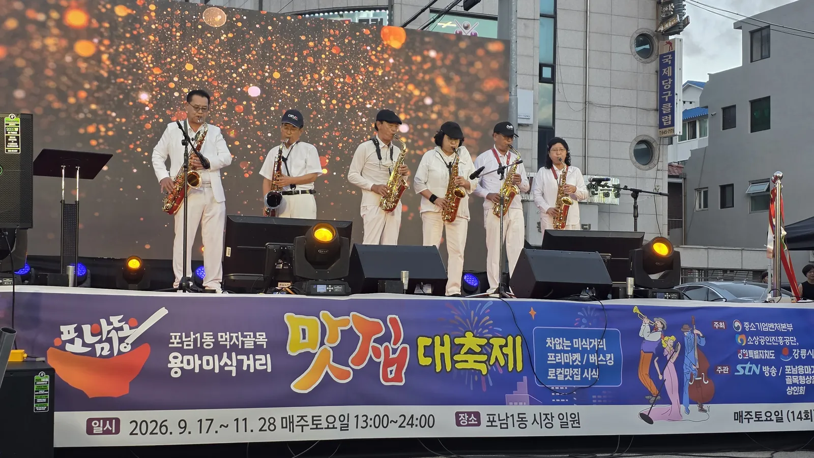
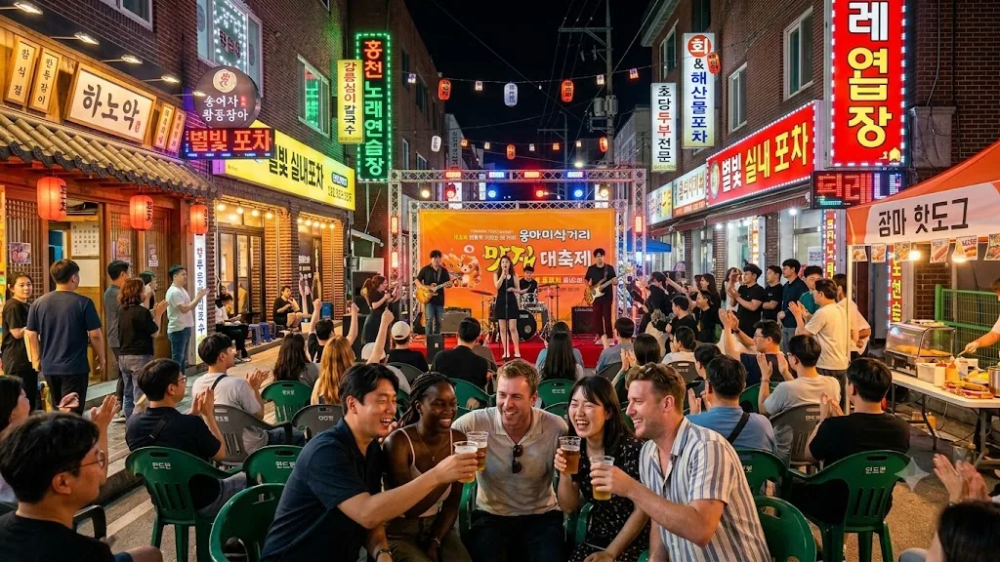
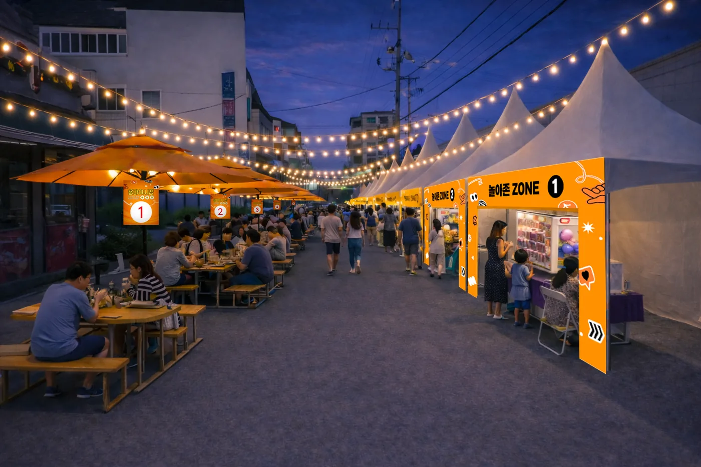
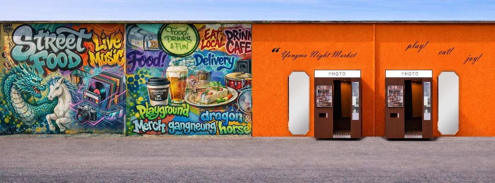
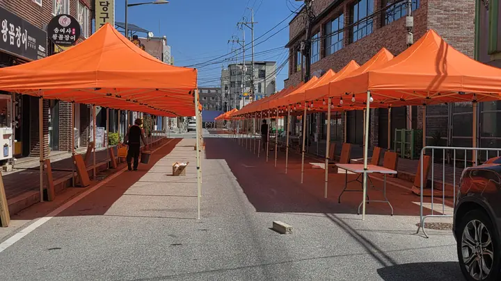

2026년 가을·겨울, 용마거리의 금요일과 토요일
10월 16일(금)부터 12월까지 매주 금·토요일 17:00~22:00. 공연과 마켓, 체험이 겹겹이 쌓여 머무는 시간이 길어집니다.
매주 금·토요일, 골목이 무대가 됩니다
시즌 내 총 15회. 오후 5시, 골목의 소리가 사람을 불러 모읍니다.
인디밴드·어쿠스틱·보컬·댄스·국악 크로스오버
야간 체류를 늘리는 참여형 무대
- · 공연 4주 전 공모·섭외 — 강릉버스킹 전국대회 운영 네트워크 활용
- · 트러스 무대·감성조명·음향 상설 설치로 매회 동일한 품질 유지
- · 자체 방송팀이 현장 촬영·편집, 유튜브 생중계 연계
- · 우천·행사 취소 시 다음 주로 대체 운영



1년에 한 번, 골목이 전국으로 나갑니다
10. 30.~31. 동행축제와 연계한 K-POP·K-DANCE 기획공연. 공원 무대에서 열리고 방송으로 이어집니다.
- · 동행축제 연계 — 중소벤처기업부 전국 단위 소비촉진 행사와 일정 매칭
- · K-POP · K-DANCE 무대 — 글로벌 댄스크리에이터 협업 무대 구성
- · 중계·송출 — 자체 중계 인프라로 촬영, 유튜브·SNS 동시 송출
- · 공연 종료 후 골목 회유 동선 설계 — 관람객을 어서와존·프리마켓으로 유도
※ 출연진·일정은 확정 즉시 「다가오는 일정」에 공개됩니다.
오늘의 셀러가 내일의 창업자로
행사기간 내내 상시 운영. 강릉 로컬 셀러가 자리를 펴고, 반응이 좋은 셀러는 부스 판매로 이어집니다.
| 셀러 모집 | 강릉 로컬 수공예·커피·디저트 중심 자율 모집 |
|---|---|
| 부스 지원 | 몽골텐트·오픈랙 선반·조명 제공, 셀러는 물품만 준비 |
| 멘토링 | 향토음식·공예·예술 분야 창업 멘토링 |



보고, 만들고, 즐기는 골목
시즌 4회 집중 운영. 연령대와 국적에 상관없이 오래 머물 수 있는 체험 공간입니다.
| 향토음식 체험 부스 | 감자옹심이 빚기·꼬막 비빔밥 만들기 + 강릉커피 로스팅 |
|---|---|
| 인형뽑기 부스 | 대형 인형 도전 · 가족·청년층 체류 콘텐츠 |
| 캘리그라피 부스 | 한글 손글씨 체험 · 부채·엽서·에코백에 새기기 |
| 강릉 예술인존 | 로컬 작가 작품 전시·판매 및 라이브 퍼포먼스 |
| 외국인 체험 부스 | 옹심이·한과 만들기 + 영문 인증서 발급 + 다국어 안내 |


개막일 기록 — 제2회 용마미식거리 맛집대축제 (9. 18.)
9월 18일 금요일, 시즌 첫날의 진행 순서입니다. 10월 16일(금)부터는 매주 금·토요일 17:00~22:00으로 정기 운영합니다.
| 시간 | 프로그램 | 내용 |
|---|---|---|
| 15:00 | 용마미식거리 운영 시작 | 차 없는 거리 전환 · 맛집 운영부스 · 플리마켓 운영 시작 |
| 15:00–16:30 | 골목 즐기기 | 버스킹 1부 · 플리마켓 · 먹거리 운영 |
| 16:30–17:00 | 공식행사 준비 | 상인 · 관계자 집결, 동선 및 현장 정리 |
| 17:00 | 내빈 도착 | 상인회장 · 강릉시 · 운영진 영접 |
| 17:00–17:15 | 용마미식거리 한 바퀴 | 노포 → 맛집 운영부스 → 플리마켓 순으로 골목 둘러보기 |
| 17:25–17:35 | 상인과의 만남 | 오래된 노포 상인과 신규 참여상인의 짧은 대화 |
| 17:35–17:50 | 첫날 기념행사 | 사업소개 → 상인회장 환영 → 축하말씀 |
| 17:50–17:55 | 첫 불 밝히기 | 골목 스트링 조명 → 점포 앞 조명 순차 점등 |
| 17:55–18:00 | 기념촬영 | 상인 · 시민 · 참여 셀러 단체 촬영 |
| 18:00–19:00 | 골목어게인 버스킹 | 시즌 첫 무대 |
| 19:00–22:00 | 야간 운영 | DJ 음악다방 · 거리노래방 · 먹거리 · 플리마켓 |
테이프 커팅 대신, 골목에 불을 켭니다
상권사업의 개막을 시설 준공식처럼 치르지 않기로 했습니다. 시장님과 상인회장, 40년 노포의 대표상인, 청년상인이 함께 스위치를 누르면 골목 스트링 조명이 먼저 켜지고 이어서 점포 앞 조명이 하나씩 밝아집니다. 가게를 지켜온 사람들이 주인공이 되는 장면으로 시즌을 시작합니다.
개막일 현장 사진 보기
다가오는 일정
확정된 공연·행사 일정을 안내합니다. 일정은 기상 상황에 따라 조정될 수 있습니다.
운영일(금·토) 하루 흐름
| 시간 | 내용 | 장소 |
|---|---|---|
| 17:00 | 차 없는 거리 개시 · 물품보관 운영 시작 | 물품보관소 |
| 17:00–22:00 | K-미식벨트 어서와존 상시 운영 (참여 점포 10개소) | 어서와존 |
| 17:00– | 놀아존 체험 프로그램 · 예술인존 전시 | 놀아존 |
| 17:00–19:00 | 골목어게인 버스킹 (1타임) | 버스킹존 |
| 19:00–22:00 | DJ 음악다방 · 거리노래방 (2타임) | 버스킹존 |
| 19:00–22:00 | 한번봐존 프리마켓 (행사기간 상시) | 한번봐존 |
| ~22:00 | 운영 종료 · 시설 정리 및 안전 점검 | 전 구역 |
※ 우천·강풍 시 안전을 위해 일부 프로그램이 중단될 수 있습니다. 몽골텐트·파라솔로 우천 시에도 일부 운영을 유지합니다.
시즌 로드맵
-
8 ~ 9월
브랜드 개발 · 공간 조성
브랜드(BI)와 다국어 홈페이지 개발, 캐릭터 조형물 조성, 감성조명·음향 설치를 순차 진행합니다.
-
9월
용마 바람길 조성 · 시즌 개막
파라솔·몽골텐트를 설치하고 차 없는 거리 운영을 시작합니다. 난방설비는 10~12월에 운영합니다.
-
9 ~ 12월
골목어게인 15회 · 프리마켓 상시
매주 금·토요일 공연이 이어지고, 프리마켓은 행사기간 내내 상시 운영합니다.
-
10월
K-컬처 기획공연
동행축제와 연계한 K-POP·K-DANCE 무대. 공원 무대에서 진행하며 전국으로 중계됩니다.
-
12월
성과 정리 · 자립 운영 전환
방문객 설문과 성과지표를 정리하고, 상인회 자체 운영 체계로 넘깁니다.
-
2027년 1 ~ 3월
정산 · 결과보고
사업기간이 2027년 3월 31일까지 연장되어, 사업비 정산과 결과보고를 마무리합니다.

